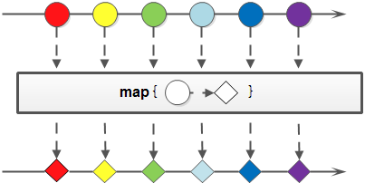

day13【Stream流、方法引用】主要内容教学目标第一章 Stream流1.1 引言传统集合的多步遍历代码循环遍历的弊端Stream的更优写法1.2 流式思想概述1.3 获取流根据Collection获取流根据Map获取流根据数组获取流1.4 常用方法逐一处理：forEach复习Consumer接口基本使用：过滤：filter复习Predicate接口基本使用映射：map复习Function接口基本使用统计个数：count取用前几个：limit跳过前几个：skip组合：concat1.5 练习：集合元素处理（传统方式）题目解答1.6 练习：集合元素处理（Stream方式）题目解答第二章 方法引用2.1 冗余的Lambda场景2.2 问题分析2.3 用方法引用改进代码2.4 方法引用符语义分析推导与省略2.5 通过对象名引用成员方法2.6 通过类名称引用静态方法2.7 通过super引用成员方法2.8 通过this引用成员方法2.9 类的构造器引用2.10 数组的构造器引用
day13【Stream流、方法引用】
主要内容
- Stream流
- 方法引用
教学目标
能够理解流与集合相比的优点
能够理解流的延迟执行特点
能够通过集合、映射或数组获取流
能够掌握常用的流操作
能够使用输出语句的方法引用3
能够通过4种方式使用方法引用
能够使用类和数组的构造器引用8
第一章 Stream流
说到Stream便容易想到I/O Stream，而实际上，谁规定“流”就一定是“IO流”呢？在Java 8中，得益于Lambda所带来的函数式编程，引入了一个全新的Stream概念，用于解决已有集合类库既有的弊端。
1.1 引言
传统集合的多步遍历代码
几乎所有的集合（如Collection接口或Map接口等）都支持直接或间接的遍历操作。而当我们需要对集合中的元素进行操作的时候，除了必需的添加、删除、获取外，最典型的就是集合遍历。例如：
ximport java.util.ArrayList;import java.util.List;public class Demo01ForEach { public static void main(String[] args) { List<String> list = new ArrayList<>(); list.add("张无忌"); list.add("周芷若"); list.add("赵敏"); list.add("张强"); list.add("张三丰"); for (String name : list) { System.out.println(name); } } }这是一段非常简单的集合遍历操作：对集合中的每一个字符串都进行打印输出操作。
循环遍历的弊端
Java 8的Lambda让我们可以更加专注于做什么（What），而不是怎么做（How），这点此前已经结合内部类进行了对比说明。现在，我们仔细体会一下上例代码，可以发现：
- for循环的语法就是“怎么做”
- for循环的循环体才是“做什么”
为什么使用循环？因为要进行遍历。但循环是遍历的唯一方式吗？遍历是指每一个元素逐一进行处理，而并不是从第一个到最后一个顺次处理的循环。前者是目的，后者是方式。
试想一下，如果希望对集合中的元素进行筛选过滤：
- 将集合A根据条件一过滤为子集B；
- 然后再根据条件二过滤为子集C。
那怎么办？在Java 8之前的做法可能为：
xxxxxxxxxximport java.util.ArrayList;import java.util.List;public class Demo02NormalFilter { public static void main(String[] args) { List<String> list = new ArrayList<>(); list.add("张无忌"); list.add("周芷若"); list.add("赵敏"); list.add("张强"); list.add("张三丰"); List<String> zhangList = new ArrayList<>(); for (String name : list) { if (name.startsWith("张")) { zhangList.add(name); } } List<String> shortList = new ArrayList<>(); for (String name : zhangList) { if (name.length() == 3) { shortList.add(name); } } for (String name : shortList) { System.out.println(name); } }}这段代码中含有三个循环，每一个作用不同：
- 首先筛选所有姓张的人；
- 然后筛选名字有三个字的人；
- 最后进行对结果进行打印输出。
每当我们需要对集合中的元素进行操作的时候，总是需要进行循环、循环、再循环。这是理所当然的么？不是。循环是做事情的方式，而不是目的。另一方面，使用线性循环就意味着只能遍历一次。如果希望再次遍历，只能再使用另一个循环从头开始。
那，Lambda的衍生物Stream能给我们带来怎样更加优雅的写法呢？
Stream的更优写法
下面来看一下借助Java 8的Stream API，什么才叫优雅：
xxxxxxxxxximport java.util.ArrayList;import java.util.List;public class Demo03StreamFilter { public static void main(String[] args) { List<String> list = new ArrayList<>(); list.add("张无忌"); list.add("周芷若"); list.add("赵敏"); list.add("张强"); list.add("张三丰"); list.stream() .filter(s -> s.startsWith("张")) .filter(s -> s.length() == 3) .forEach(System.out::println); }}直接阅读代码的字面意思即可完美展示无关逻辑方式的语义：获取流、过滤姓张、过滤长度为3、逐一打印。代码中并没有体现使用线性循环或是其他任何算法进行遍历，我们真正要做的事情内容被更好地体现在代码中。
1.2 流式思想概述
注意：请暂时忘记对传统IO流的固有印象！
整体来看，流式思想类似于工厂车间的“生产流水线”。

当需要对多个元素进行操作（特别是多步操作）的时候，考虑到性能及便利性，我们应该首先拼好一个“模型”步骤方案，然后再按照方案去执行它。

这张图中展示了过滤、映射、跳过、计数等多步操作，这是一种集合元素的处理方案，而方案就是一种“函数模型”。图中的每一个方框都是一个“流”，调用指定的方法，可以从一个流模型转换为另一个流模型。而最右侧的数字3是最终结果。
这里的filter、map、skip都是在对函数模型进行操作，集合元素并没有真正被处理。只有当终结方法count执行的时候，整个模型才会按照指定策略执行操作。而这得益于Lambda的延迟执行特性。
备注：“Stream流”其实是一个集合元素的函数模型，它并不是集合，也不是数据结构，其本身并不存储任何元素（或其地址值）。
Stream（流）是一个来自数据源的元素队列
- 元素是特定类型的对象，形成一个队列。 Java中的Stream并不会存储元素，而是按需计算。
- 数据源 流的来源。 可以是集合，数组 等。
和以前的Collection操作不同， Stream操作还有两个基础的特征：
- Pipelining: 中间操作都会返回流对象本身。 这样多个操作可以串联成一个管道， 如同流式风格（fluent style）。 这样做可以对操作进行优化， 比如延迟执行(laziness)和短路( short-circuiting)。
- 内部迭代： 以前对集合遍历都是通过Iterator或者增强for的方式, 显式的在集合外部进行迭代， 这叫做外部迭代。 Stream提供了内部迭代的方式，流可以直接调用遍历方法。
当使用一个流的时候，通常包括三个基本步骤：获取一个数据源（source）→ 数据转换→执行操作获取想要的结果，每次转换原有 Stream 对象不改变，返回一个新的 Stream 对象（可以有多次转换），这就允许对其操作可以像链条一样排列，变成一个管道。
1.3 获取流
java.util.stream.Stream<T>是Java 8新加入的最常用的流接口。（这并不是一个函数式接口。）
获取一个流非常简单，有以下几种常用的方式：
- 所有的
Collection集合都可以通过stream默认方法获取流； Stream接口的静态方法of可以获取数组对应的流。
根据Collection获取流
首先，java.util.Collection接口中加入了default方法stream用来获取流，所以其所有实现类均可获取流。
xxxxxxxxxximport java.util.*;import java.util.stream.Stream;public class Demo04GetStream { public static void main(String[] args) { List<String> list = new ArrayList<>(); // ... Stream<String> stream1 = list.stream(); Set<String> set = new HashSet<>(); // ... Stream<String> stream2 = set.stream(); Vector<String> vector = new Vector<>(); // ... Stream<String> stream3 = vector.stream(); }}根据Map获取流
java.util.Map接口不是Collection的子接口，且其K-V数据结构不符合流元素的单一特征，所以获取对应的流需要分key、value或entry等情况：
xxxxxxxxxximport java.util.HashMap;import java.util.Map;import java.util.stream.Stream;public class Demo05GetStream { public static void main(String[] args) { Map<String, String> map = new HashMap<>(); // ... Stream<String> keyStream = map.keySet().stream(); Stream<String> valueStream = map.values().stream(); Stream<Map.Entry<String, String>> entryStream = map.entrySet().stream(); }}根据数组获取流
如果使用的不是集合或映射而是数组，由于数组对象不可能添加默认方法，所以Stream接口中提供了静态方法of，使用很简单：
xxxxxxxxxximport java.util.stream.Stream;public class Demo06GetStream { public static void main(String[] args) { String[] array = { "张无忌", "张翠山", "张三丰", "张一元" }; Stream<String> stream = Stream.of(array); }}备注：
of方法的参数其实是一个可变参数，所以支持数组。
1.4 常用方法

流模型的操作很丰富，这里介绍一些常用的API。这些方法可以被分成两种：
- 延迟方法：返回值类型仍然是
Stream接口自身类型的方法，因此支持链式调用。（除了终结方法外，其余方法均为延迟方法。） - 终结方法：返回值类型不再是
Stream接口自身类型的方法，因此不再支持类似StringBuilder那样的链式调用。本小节中，终结方法包括count和forEach方法。
备注：本小节之外的更多方法，请自行参考API文档。
逐一处理：forEach
虽然方法名字叫forEach，但是与for循环中的“for-each”昵称不同。
xxxxxxxxxxvoid forEach(Consumer<? super T> action);该方法接收一个Consumer接口函数，会将每一个流元素交给该函数进行处理。
复习Consumer接口
xxxxxxxxxxjava.util.function.Consumer<T>接口是一个消费型接口。Consumer接口中包含抽象方法void accept(T t)，意为消费一个指定泛型的数据。基本使用：
xxxxxxxxxximport java.util.stream.Stream;public class Demo12StreamForEach { public static void main(String[] args) { Stream<String> stream = Stream.of("张无忌", "张三丰", "周芷若"); stream.forEach(name-> System.out.println(name)); }}过滤：filter
可以通过filter方法将一个流转换成另一个子集流。方法签名：
xxxxxxxxxxStream<T> filter(Predicate<? super T> predicate);该接口接收一个Predicate函数式接口参数（可以是一个Lambda或方法引用）作为筛选条件。
复习Predicate接口
此前我们已经学习过java.util.stream.Predicate函数式接口，其中唯一的抽象方法为：
xxxxxxxxxxboolean test(T t);该方法将会产生一个boolean值结果，代表指定的条件是否满足。如果结果为true，那么Stream流的filter方法将会留用元素；如果结果为false，那么filter方法将会舍弃元素。
基本使用
Stream流中的filter方法基本使用的代码如：
xxxxxxxxxximport java.util.stream.Stream;public class Demo07StreamFilter { public static void main(String[] args) { Stream<String> original = Stream.of("张无忌", "张三丰", "周芷若"); Stream<String> result = original.filter(s -> s.startsWith("张")); }}在这里通过Lambda表达式来指定了筛选的条件：必须姓张。
映射：map
如果需要将流中的元素映射到另一个流中，可以使用map方法。方法签名：
xxxxxxxxxx<R> Stream<R> map(Function<? super T, ? extends R> mapper);该接口需要一个Function函数式接口参数，可以将当前流中的T类型数据转换为另一种R类型的流。

复习Function接口
此前我们已经学习过java.util.stream.Function函数式接口，其中唯一的抽象方法为：
xxxxxxxxxxR apply(T t);这可以将一种T类型转换成为R类型，而这种转换的动作，就称为“映射”。
基本使用
Stream流中的map方法基本使用的代码如：
xxxxxxxxxximport java.util.stream.Stream;public class Demo08StreamMap { public static void main(String[] args) { Stream<String> original = Stream.of("10", "12", "18"); Stream<Integer> result = original.map(str->Integer.parseInt(str)); }}这段代码中，map方法的参数通过方法引用，将字符串类型转换成为了int类型（并自动装箱为Integer类对象）。
统计个数：count
正如旧集合Collection当中的size方法一样，流提供count方法来数一数其中的元素个数：
xxxxxxxxxxlong count();该方法返回一个long值代表元素个数（不再像旧集合那样是int值）。基本使用：
xxxxxxxxxximport java.util.stream.Stream;public class Demo09StreamCount { public static void main(String[] args) { Stream<String> original = Stream.of("张无忌", "张三丰", "周芷若"); Stream<String> result = original.filter(s -> s.startsWith("张")); System.out.println(result.count()); // 2 }}取用前几个：limit
limit方法可以对流进行截取，只取用前n个。方法签名：
xxxxxxxxxxStream<T> limit(long maxSize);参数是一个long型，如果集合当前长度大于参数则进行截取；否则不进行操作。基本使用：

xxxxxxxxxximport java.util.stream.Stream;public class Demo10StreamLimit { public static void main(String[] args) { Stream<String> original = Stream.of("张无忌", "张三丰", "周芷若"); Stream<String> result = original.limit(2); System.out.println(result.count()); // 2 }}跳过前几个：skip
如果希望跳过前几个元素，可以使用skip方法获取一个截取之后的新流：
xxxxxxxxxxStream<T> skip(long n);如果流的当前长度大于n，则跳过前n个；否则将会得到一个长度为0的空流。基本使用：

xxxxxxxxxximport java.util.stream.Stream;public class Demo11StreamSkip { public static void main(String[] args) { Stream<String> original = Stream.of("张无忌", "张三丰", "周芷若"); Stream<String> result = original.skip(2); System.out.println(result.count()); // 1 }}
组合：concat
如果有两个流，希望合并成为一个流，那么可以使用Stream接口的静态方法concat：
xxxxxxxxxxstatic <T> Stream<T> concat(Stream<? extends T> a, Stream<? extends T> b)备注：这是一个静态方法，与
java.lang.String当中的concat方法是不同的。
该方法的基本使用代码如：
xxxxxxxxxximport java.util.stream.Stream;public class Demo12StreamConcat { public static void main(String[] args) { Stream<String> streamA = Stream.of("张无忌"); Stream<String> streamB = Stream.of("张翠山"); Stream<String> result = Stream.concat(streamA, streamB); }}1.5 练习：集合元素处理（传统方式）
题目
现在有两个ArrayList集合存储队伍当中的多个成员姓名，要求使用传统的for循环（或增强for循环）依次进行以下若干操作步骤：
- 第一个队伍只要名字为3个字的成员姓名；存储到一个新集合中。
- 第一个队伍筛选之后只要前3个人；存储到一个新集合中。
- 第二个队伍只要姓张的成员姓名；存储到一个新集合中。
- 第二个队伍筛选之后不要前2个人；存储到一个新集合中。
- 将两个队伍合并为一个队伍；存储到一个新集合中。
- 根据姓名创建
Person对象；存储到一个新集合中。 - 打印整个队伍的Person对象信息。
两个队伍（集合）的代码如下：
xxxxxxxxxximport java.util.ArrayList;import java.util.List;public class DemoArrayListNames { public static void main(String[] args) { //第一支队伍 ArrayList<String> one = new ArrayList<>(); one.add("迪丽热巴"); one.add("宋远桥"); one.add("苏星河"); one.add("石破天"); one.add("石中玉"); one.add("老子"); one.add("庄子"); one.add("洪七公"); //第二支队伍 ArrayList<String> two = new ArrayList<>(); two.add("古力娜扎"); two.add("张无忌"); two.add("赵丽颖"); two.add("张三丰"); two.add("尼古拉斯赵四"); two.add("张天爱"); two.add("张二狗"); // .... }}而Person类的代码为：
xxxxxxxxxxpublic class Person { private String name; public Person() {} public Person(String name) { this.name = name; } public String toString() { return "Person{name='" + name + "'}"; } public String getName() { return name; } public void setName(String name) { this.name = name; }}解答
既然使用传统的for循环写法，那么：
xxxxxxxxxxpublic class DemoArrayListNames { public static void main(String[] args) { List<String> one = new ArrayList<>(); // ... List<String> two = new ArrayList<>(); // ... // 第一个队伍只要名字为3个字的成员姓名； List<String> oneA = new ArrayList<>(); for (String name : one) { if (name.length() == 3) { oneA.add(name); } } // 第一个队伍筛选之后只要前3个人； List<String> oneB = new ArrayList<>(); for (int i = 0; i < 3; i++) { oneB.add(oneA.get(i)); } // 第二个队伍只要姓张的成员姓名； List<String> twoA = new ArrayList<>(); for (String name : two) { if (name.startsWith("张")) { twoA.add(name); } } // 第二个队伍筛选之后不要前2个人； List<String> twoB = new ArrayList<>(); for (int i = 2; i < twoA.size(); i++) { twoB.add(twoA.get(i)); } // 将两个队伍合并为一个队伍； List<String> totalNames = new ArrayList<>(); totalNames.addAll(oneB); totalNames.addAll(twoB); // 根据姓名创建Person对象； List<Person> totalPersonList = new ArrayList<>(); for (String name : totalNames) { totalPersonList.add(new Person(name)); } // 打印整个队伍的Person对象信息。 for (Person person : totalPersonList) { System.out.println(person); } }}运行结果为：
xxxxxxxxxxPerson{name='宋远桥'}Person{name='苏星河'}Person{name='石破天'}Person{name='张天爱'}Person{name='张二狗'}
1.6 练习：集合元素处理（Stream方式）
题目
将上一题当中的传统for循环写法更换为Stream流式处理方式。两个集合的初始内容不变，Person类的定义也不变。
解答
等效的Stream流式处理代码为：
xxxxxxxxxximport java.util.ArrayList;import java.util.List;import java.util.stream.Stream;public class DemoStreamNames { public static void main(String[] args) { List<String> one = new ArrayList<>(); // ... List<String> two = new ArrayList<>(); // ... // 第一个队伍只要名字为3个字的成员姓名； // 第一个队伍筛选之后只要前3个人； Stream<String> streamOne = one.stream().filter(s -> s.length() == 3).limit(3); // 第二个队伍只要姓张的成员姓名； // 第二个队伍筛选之后不要前2个人； Stream<String> streamTwo = two.stream().filter(s -> s.startsWith("张")).skip(2); // 将两个队伍合并为一个队伍； // 根据姓名创建Person对象； // 打印整个队伍的Person对象信息。 Stream.concat(streamOne, streamTwo).map(Person::new).forEach(System.out::println); }}运行效果完全一样：
xxxxxxxxxxPerson{name='宋远桥'}Person{name='苏星河'}Person{name='石破天'}Person{name='张天爱'}Person{name='张二狗'}
第二章 方法引用
在使用Lambda表达式的时候，我们实际上传递进去的代码就是一种解决方案：拿什么参数做什么操作。那么考虑一种情况：如果我们在Lambda中所指定的操作方案，已经有地方存在相同方案，那是否还有必要再写重复逻辑？
2.1 冗余的Lambda场景
来看一个简单的函数式接口以应用Lambda表达式：
xxxxxxxxxxpublic interface Printable { void print(String str);}在Printable接口当中唯一的抽象方法print接收一个字符串参数，目的就是为了打印显示它。那么通过Lambda来使用它的代码很简单：
xxxxxxxxxxpublic class Demo01PrintSimple { private static void printString(Printable data) { data.print("Hello, World!"); } public static void main(String[] args) { printString(s -> System.out.println(s)); }}其中printString方法只管调用Printable接口的print方法，而并不管print方法的具体实现逻辑会将字符串打印到什么地方去。而main方法通过Lambda表达式指定了函数式接口Printable的具体操作方案为：拿到String（类型可推导，所以可省略）数据后，在控制台中输出它。
2.2 问题分析
这段代码的问题在于，对字符串进行控制台打印输出的操作方案，明明已经有了现成的实现，那就是System.out对象中的println(String)方法。既然Lambda希望做的事情就是调用println(String)方法，那何必自己手动调用呢？
2.3 用方法引用改进代码
能否省去Lambda的语法格式（尽管它已经相当简洁）呢？只要“引用”过去就好了：
xxxxxxxxxxpublic class Demo02PrintRef { private static void printString(Printable data) { data.print("Hello, World!"); } public static void main(String[] args) { printString(System.out::println); }}请注意其中的双冒号::写法，这被称为“方法引用”，而双冒号是一种新的语法。
2.4 方法引用符
双冒号::为引用运算符，而它所在的表达式被称为方法引用。如果Lambda要表达的函数方案已经存在于某个方法的实现中，那么则可以通过双冒号来引用该方法作为Lambda的替代者。
语义分析
例如上例中，System.out对象中有一个重载的println(String)方法恰好就是我们所需要的。那么对于printString方法的函数式接口参数，对比下面两种写法，完全等效：
- Lambda表达式写法：
s -> System.out.println(s); - 方法引用写法：
System.out::println
第一种语义是指：拿到参数之后经Lambda之手，继而传递给System.out.println方法去处理。
第二种等效写法的语义是指：直接让System.out中的println方法来取代Lambda。两种写法的执行效果完全一样，而第二种方法引用的写法复用了已有方案，更加简洁。
注:Lambda 中 传递的参数 一定是方法引用中 的那个方法可以接收的类型,否则会抛出异常
推导与省略
如果使用Lambda，那么根据“可推导就是可省略”的原则，无需指定参数类型，也无需指定的重载形式——它们都将被自动推导。而如果使用方法引用，也是同样可以根据上下文进行推导。
函数式接口是Lambda的基础，而方法引用是Lambda的孪生兄弟。
下面这段代码将会调用println方法的不同重载形式，将函数式接口改为int类型的参数：
xxxxxxxxxxpublic interface PrintableInteger { void print(int str);}由于上下文变了之后可以自动推导出唯一对应的匹配重载，所以方法引用没有任何变化：
xxxxxxxxxxpublic class Demo03PrintOverload { private static void printInteger(PrintableInteger data) { data.print(1024); } public static void main(String[] args) { printInteger(System.out::println); }}这次方法引用将会自动匹配到println(int)的重载形式。
2.5 通过对象名引用成员方法
这是最常见的一种用法，与上例相同。如果一个类中已经存在了一个成员方法：
xxxxxxxxxxpublic class MethodRefObject { public void printUpperCase(String str) { System.out.println(str.toUpperCase()); }}函数式接口仍然定义为：
xxxxxxxxxxpublic interface Printable { void print(String str);}那么当需要使用这个printUpperCase成员方法来替代Printable接口的Lambda的时候，已经具有了MethodRefObject类的对象实例，则可以通过对象名引用成员方法，代码为：
xxxxxxxxxxpublic class Demo04MethodRef { private static void printString(Printable lambda) { lambda.print("Hello"); } public static void main(String[] args) { MethodRefObject obj = new MethodRefObject(); printString(obj::printUpperCase); }}2.6 通过类名称引用静态方法
由于在java.lang.Math类中已经存在了静态方法abs，所以当我们需要通过Lambda来调用该方法时，有两种写法。首先是函数式接口：
xxxxxxxxxxpublic interface Calcable { int calc(int num);}第一种写法是使用Lambda表达式：
xxxxxxxxxxpublic class Demo05Lambda { private static void method(int num, Calcable lambda) { System.out.println(lambda.calc(num)); } public static void main(String[] args) { method(-10, n -> Math.abs(n)); }}但是使用方法引用的更好写法是：
xxxxxxxxxxpublic class Demo06MethodRef { private static void method(int num, Calcable lambda) { System.out.println(lambda.calc(num)); } public static void main(String[] args) { method(-10, Math::abs); }}在这个例子中，下面两种写法是等效的：
- Lambda表达式：
n -> Math.abs(n) - 方法引用：
Math::abs
2.7 通过super引用成员方法
如果存在继承关系，当Lambda中需要出现super调用时，也可以使用方法引用进行替代。首先是函数式接口：
xxxxxxxxxxpublic interface Greetable { void greet();}然后是父类Human的内容：
xxxxxxxxxxpublic class Human { public void sayHello() { System.out.println("Hello!"); }}最后是子类Man的内容，其中使用了Lambda的写法：
xxxxxxxxxxpublic class Man extends Human { public void sayHello() { System.out.println("大家好,我是Man!"); } //定义方法method,参数传递Greetable接口 public void method(Greetable g){ g.greet(); } public void show(){ //调用method方法,使用Lambda表达式 method(()->{ //创建Human对象,调用sayHello方法 new Human().sayHello(); }); //简化Lambda method(()->new Human().sayHello()); //使用super关键字代替父类对象 method(()->super.sayHello()); }}但是如果使用方法引用来调用父类中的sayHello方法会更好，例如另一个子类Woman：
xxxxxxxxxxpublic class Man extends Human { public void sayHello() { System.out.println("大家好,我是Man!"); } //定义方法method,参数传递Greetable接口 public void method(Greetable g){ g.greet(); } public void show(){ method(super::sayHello); }}在这个例子中，下面两种写法是等效的：
- Lambda表达式：
() -> super.sayHello() - 方法引用：
super::sayHello
2.8 通过this引用成员方法
this代表当前对象，如果需要引用的方法就是当前类中的成员方法，那么可以使用“this::成员方法”的格式来使用方法引用。首先是简单的函数式接口：
xxxxxxxxxxpublic interface Richable { void buy();}下面是一个丈夫Husband类：
xxxxxxxxxxpublic class Husband { private void marry(Richable lambda) { lambda.buy(); } public void beHappy() { marry(() -> System.out.println("买套房子")); }}开心方法beHappy调用了结婚方法marry，后者的参数为函数式接口Richable，所以需要一个Lambda表达式。但是如果这个Lambda表达式的内容已经在本类当中存在了，则可以对Husband丈夫类进行修改：
xxxxxxxxxxpublic class Husband { private void buyHouse() { System.out.println("买套房子"); } private void marry(Richable lambda) { lambda.buy(); } public void beHappy() { marry(() -> this.buyHouse()); }}如果希望取消掉Lambda表达式，用方法引用进行替换，则更好的写法为：
xxxxxxxxxxpublic class Husband { private void buyHouse() { System.out.println("买套房子"); } private void marry(Richable lambda) { lambda.buy(); } public void beHappy() { marry(this::buyHouse); }}在这个例子中，下面两种写法是等效的：
- Lambda表达式：
() -> this.buyHouse() - 方法引用：
this::buyHouse
2.9 类的构造器引用
由于构造器的名称与类名完全一样，并不固定。所以构造器引用使用类名称::new的格式表示。首先是一个简单的Person类：
xxxxxxxxxxpublic class Person { private String name; public Person(String name) { this.name = name; } public String getName() { return name; } public void setName(String name) { this.name = name; }}然后是用来创建Person对象的函数式接口：
xxxxxxxxxxpublic interface PersonBuilder { Person buildPerson(String name);}要使用这个函数式接口，可以通过Lambda表达式：
xxxxxxxxxxpublic class Demo09Lambda { public static void printName(String name, PersonBuilder builder) { System.out.println(builder.buildPerson(name).getName()); } public static void main(String[] args) { printName("赵丽颖", name -> new Person(name)); }}但是通过构造器引用，有更好的写法：
xxxxxxxxxxpublic class Demo10ConstructorRef { public static void printName(String name, PersonBuilder builder) { System.out.println(builder.buildPerson(name).getName()); } public static void main(String[] args) { printName("赵丽颖", Person::new); }}在这个例子中，下面两种写法是等效的：
- Lambda表达式：
name -> new Person(name) - 方法引用：
Person::new
2.10 数组的构造器引用
数组也是Object的子类对象，所以同样具有构造器，只是语法稍有不同。如果对应到Lambda的使用场景中时，需要一个函数式接口：
xxxxxxxxxxpublic interface ArrayBuilder { int[] buildArray(int length);}在应用该接口的时候，可以通过Lambda表达式：
xxxxxxxxxxpublic class Demo11ArrayInitRef { private static int[] initArray(int length, ArrayBuilder builder) { return builder.buildArray(length); } public static void main(String[] args) { int[] array = initArray(10, length -> new int[length]); }}但是更好的写法是使用数组的构造器引用：
xxxxxxxxxxpublic class Demo12ArrayInitRef { private static int[] initArray(int length, ArrayBuilder builder) { return builder.buildArray(length); } public static void main(String[] args) { int[] array = initArray(10, int[]::new); }}在这个例子中，下面两种写法是等效的：
- Lambda表达式：
length -> new int[length] - 方法引用：
int[]::new